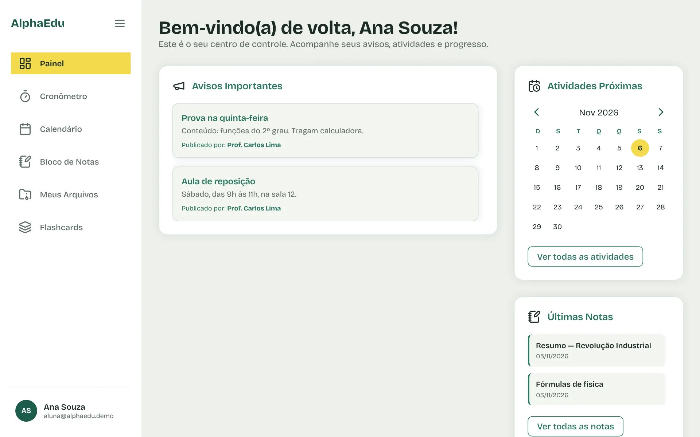
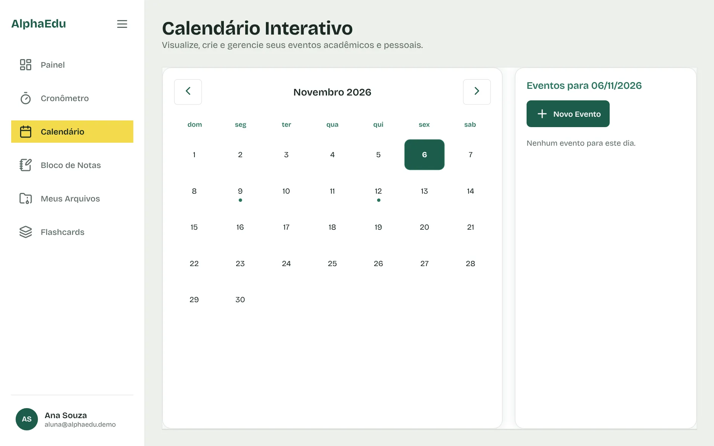
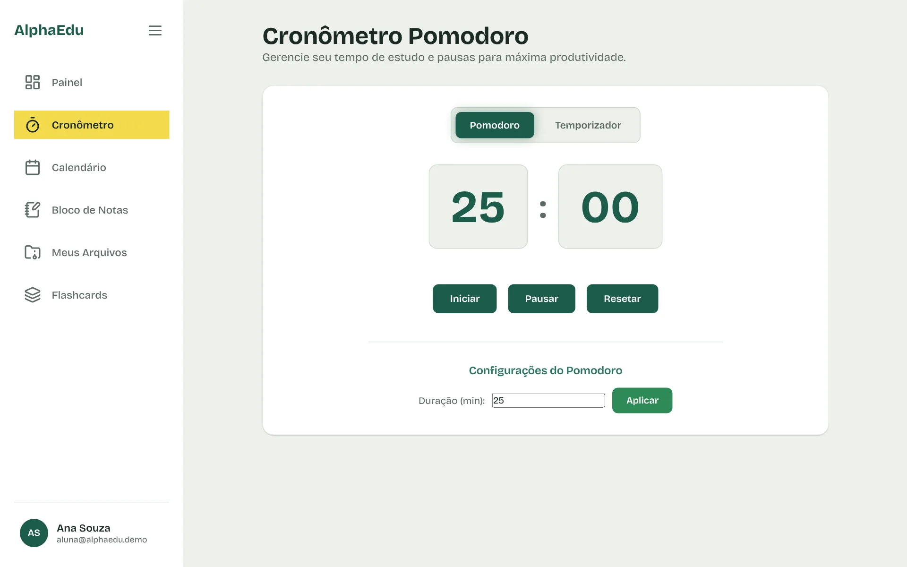
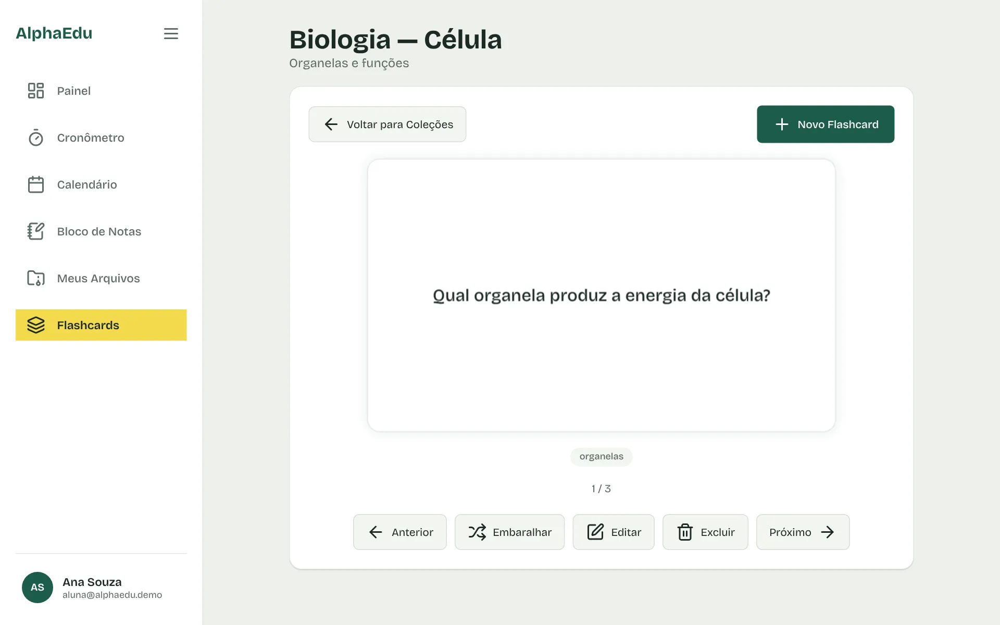
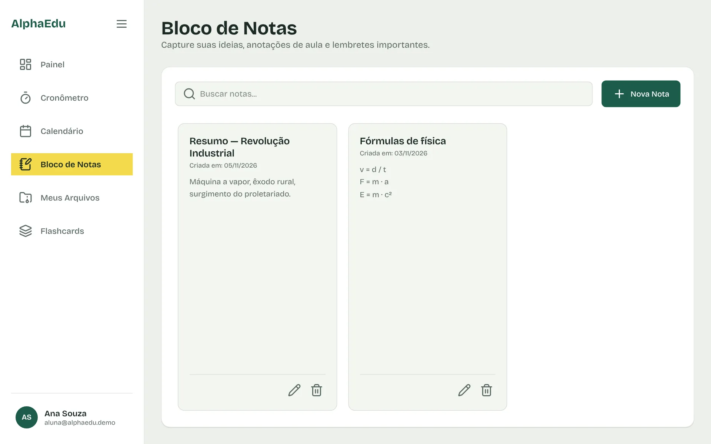
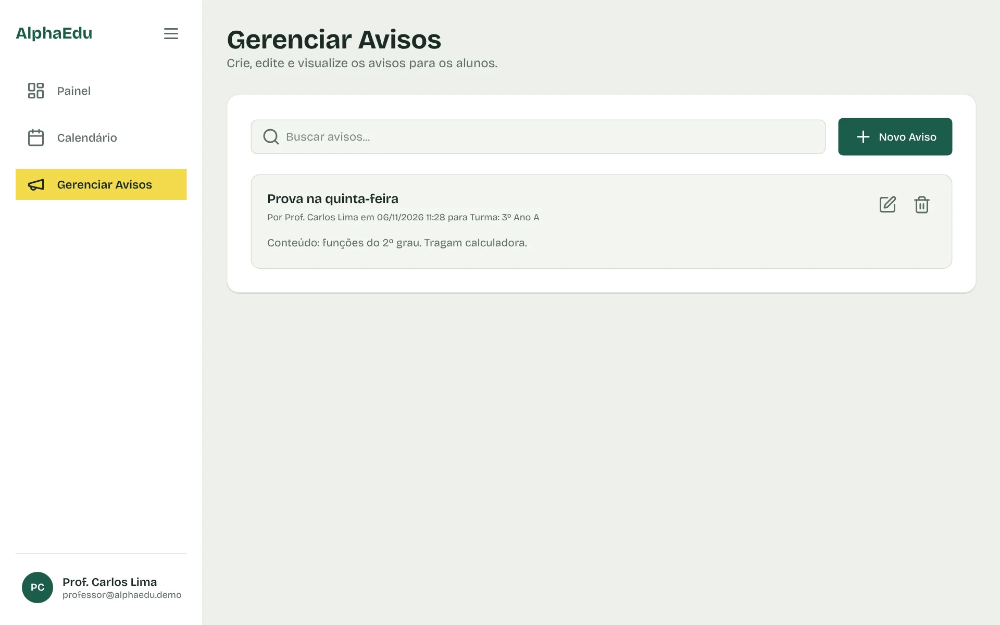

Painel do aluno
Ao abrir o AlphaEdu você vê os avisos da sua turma, o mês no calendário e as últimas anotações. Para entrar numa turma, basta o código que o professor passar.
Abrir o painel
O AlphaEdu junta calendário, cronômetro Pomodoro, flashcards e bloco de notas. O professor publica provas e avisos, e eles aparecem no painel de cada aluno.
Demonstração aberta, sem cadastro. O que você criar fica salvo só no seu navegador.
Ao abrir o AlphaEdu você vê os avisos da sua turma, o mês no calendário e as últimas anotações. Para entrar numa turma, basta o código que o professor passar.
Abrir o painel
Marque provas, entregas e compromissos. As datas com eventos ganham um ponto, e o dia de hoje fica destacado.
Abrir o calendário
Estude em blocos de 25 minutos com pausas entre eles. Dá para mudar a duração ou usar como temporizador comum.
Abrir o cronômetro
Monte coleções por matéria, revise cartão por cartão e embaralhe quando quiser se testar de verdade.
Abrir os flashcards
Resumos, fórmulas e lembretes ficam guardados e podem ser buscados pelo título ou pelo conteúdo.
Abrir o bloco de notas
Crie turmas, compartilhe o código com os alunos e publique avisos de prova, reposição ou falta. Os eventos entram no calendário da turma.
Entrar como professor
Projeto desenvolvido por estudantes do Instituto Federal do Amazonas.
 Jonatas MacielScrum Master
Jonatas MacielScrum Master Sérgio NinaDev. Back-End
Sérgio NinaDev. Back-End